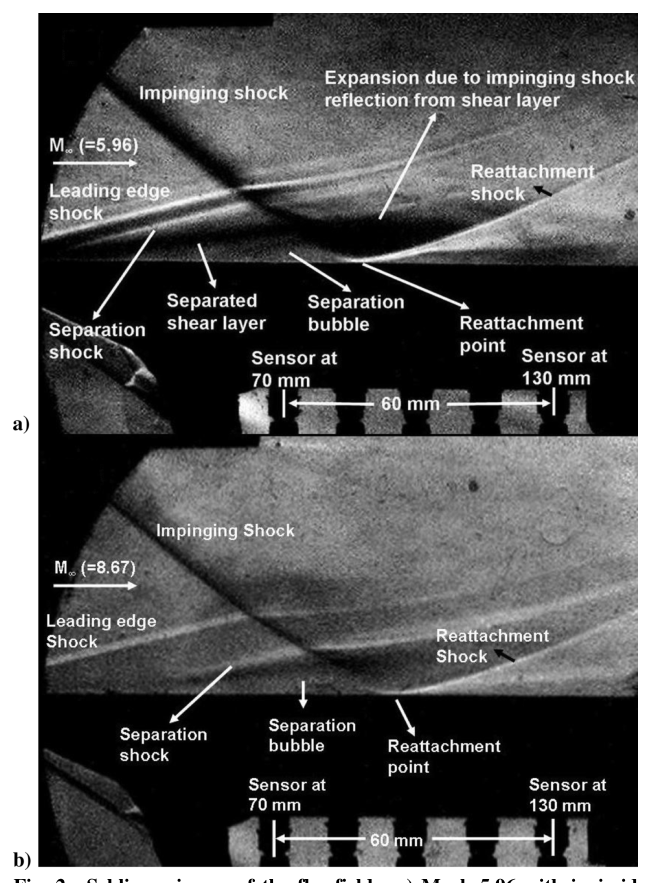
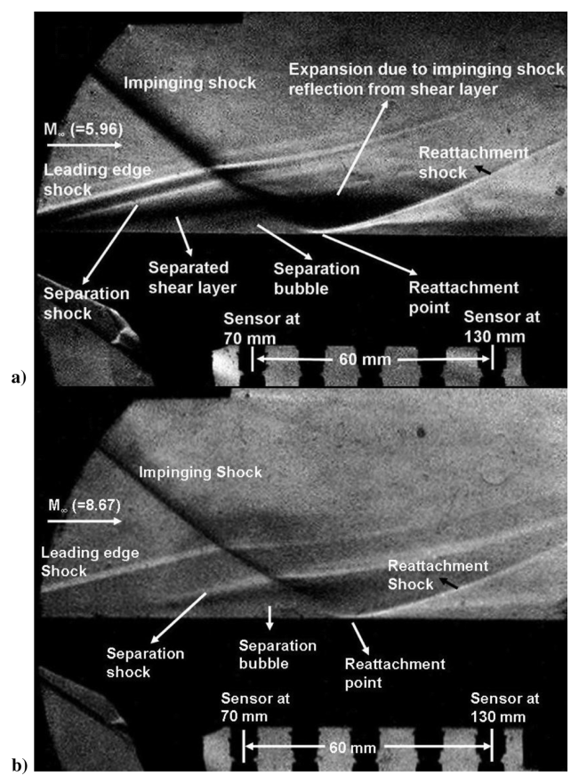
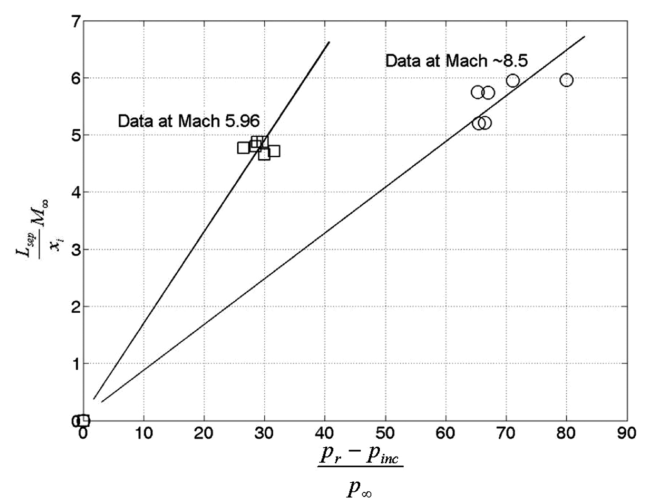
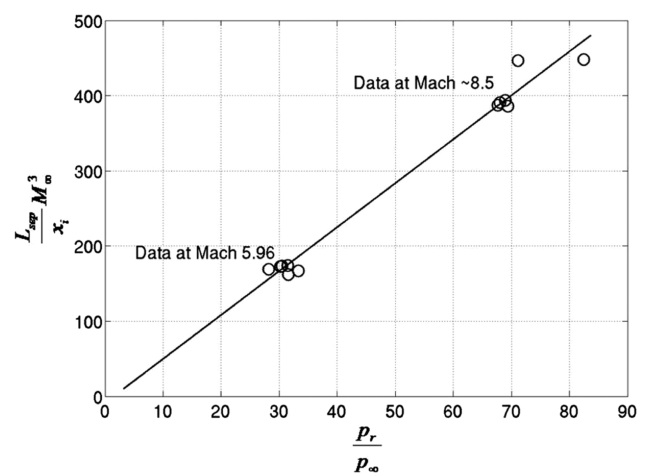

01中文摘要
用 31° 楔产生强入射激波，冲击平板层流边界层，在 M=5.96、8.21、8.67 的激波风洞中测量大分离泡。此处分离长度与激波入射点距前缘的距离同量级，称为“大分离泡”。实验发现 Katzer 的层流入射激波相似律不再适用，遂提出新的分离长度关联式。马赫数增大使分离长度显著减小，尽管再附压比随激波增强而增大；总焓较高的工况分离泡约长 10 mm，但在本研究范围内真实气体效应不显著；大分离泡近似与雷诺数无关，呈无粘标度。
02阅读说明
实验研究（高超声速激波风洞）加相似分析；AIAA Journal 2015 年 Technical Note，共 6 页。材料含全文、Table 1 与 Fig. 1–5 的抓图清单；双栏 OCR 有错位，Table 1 与公式已回读 PDF 第 2–4 页核对。分离长度、分离/再附位置、压力与工况较完整；未给出风洞运行时间、边界层剖面与表面热流，Euler 计算仅用于确定无黏入射位置。提取口径：只采用 bundle 文本与 PDF 核对页，不引入外部文献结论。 文章类型：期刊
03一句话核心与三句话摘要
M∞5.96–8.67 强入射激波产生与入射距离同量级的大分离泡，长度遵循 Lsep/x_i·M∞³∝p_r/p∞。
- 已有分离长度关联式多针对分离泡与边界层厚度同量级的弱干扰，作者明确指出没有关联式处理“大分离泡”。 原文明确
- 在 IISc HST-2 激波风洞中，用 31° 楔产生强入射激波，M∞=5.96、8.67、8.21，入射位置 55–100 mm，测得分离长度 45–75 mm，约为入射距离的 0.45–0.79。 AI概括
- 将 Katzer 关联式与高超声速位移厚度标度结合，得到与 Reynolds 数无关、斜率为 5.8 的线性相似律，说明大分离泡由无黏压比控制。 AI概括
04核心内容清单
| 要点 | 类型 | 重要性 | 原文依据 | 属性 |
|---|---|---|---|---|
| 把分离长度与激波入射距离之比为 O(1) 的分离泡定义为“大分离泡”，并指出现有关联式均未覆盖此类流动。 | 问题定义/文献缺口 | A | p.2771, §I | 原文明确 |
| 采用 31° 楔在 M5.96–8.67 产生压比 18.5–35 的强入射激波，入射位置可在 55–100 mm 间变化。 | 实验构型 | A | p.2772, §II；Fig. 1 | 原文明确 |
| M5.96/95 mm 工况：分离点 16 mm、再附点 90.5 mm，分离长度约 75 mm，与入射距离同量级。 | 核心测量 | A | p.2773, §II | 原文明确 |
| 同一 Mach 数下减小入射距离（95→75→55 mm），分离长度依次约 75、60、45 mm，近似随入射距离缩放。 | 参数趋势 | A | p.2773, §II | 原文明确 |
| M8.67/100 mm 分离长度约 60 mm、分离点约 38 mm；入射 80 mm 时约 55 mm。 | 核心测量 | A | p.2773, §II | 原文明确 |
| M8.21、2.4 MJ/kg、100 mm 工况分离长度约 70 mm，比 1.6 MJ/kg 的 M8.67 大约 10 mm。 | 焓效应 | A | p.2773, §II | 原文明确 |
| 再附压比约 30（M5.96）与约 70（M≈8.5），但分离长度随 Mach 数增加而显著减小，说明不能只用压比解释。 | 关键反例 | A | p.2773, §II | AI概括 |
| 分离压力实测 640 Pa；自由干扰理论绝热壁估计 530 Pa、300 K 等温壁估计 400 Pa，等温壁严重低估平台压力。 | 压力标定 | B | p.2772, §II；Fig. 3b | 原文明确 |
| Katzer 关联式（式1）在强激波、大分离泡条件下失效，M5.96 与 M≈8.5 数据落在两条不同直线上。 | 关联式检验 | A | p.2774, §III；Fig. 4；式(1) | 原文明确 |
| 由式(1)与高超声速位移厚度标度式(2)导出 Lsep/x_i·M∞³∝p_r/p_∞（式3），实验拟合斜率 5.8，且与 Reynolds 数无关。 | 核心相似律 | A | p.2774–2775, §III；式(2)(3)；Fig. 5 | 原文明确 |
| 楔尾膨胀扇通过削弱/弯曲入射激波、推迟再附影响干扰，但测得的分离长度已隐含该效应，故关联式可推广到不同膨胀扇强度。 | 机制论证 | B | p.2773–2774, §II–III | AI概括 |
| 实验为层流（基于入射距离 Re=1×10^5–3.8×10^5），但分离后剪切层是否转捩无法由现有数据判定；展向三维性按 10δs 估计局限在中心区。 | 适用边界 | B | p.2774, §II“Note on boundary-layer characteristics” | 原文明确 |
05引言：研究问题与领域缺口
入射激波/边界层干扰是进气道等构型在非设计高马赫数条件下的基本问题：楔面激波在唇口下游入射到平板边界层，可形成长度接近入射距离的大分离泡。作者把“分离长度与激波入射点至前缘距离之比为 O(1)”定义为大分离泡，并指出文献中的分离长度关联式（Hakkinen 等、Katzer、Davis–Sturtevant、Burggraf 等）均针对分离泡与边界层厚度同量级的情形，没有一个处理大分离泡；John 与 Kulkarni 的评估还表明这些关联式并不普适。研究目标是利用不同来流条件与不同激波入射位置的激波风洞实验，给出大分离泡长度的关联式。
06流动条件与几何构型
| 项目 | 数值/描述 | 依据 | 备注 |
|---|---|---|---|
| 来流 Mach 数 5.96 工况 | M∞=5.96；p∞=1277 Pa（±3.2%）；T∞=160 K（±4.4%）；Re∞=4×10^6 /m（±8.3%）；h0=1.3 MJ/kg（±3%） | Table 1, p.2772 | 由激波管端压力/激波速度与试验段皮托压力确定 |
| 来流 Mach 数 8.67 工况 | M∞=8.67；p∞=179 Pa（±4.4%）；T∞=99 K（±4.4%）；Re∞=1.67×10^6 /m（±8.3%）；h0=1.6 MJ/kg（±3%） | Table 1, p.2772 | |
| 来流 Mach 数 8.21 工况 | M∞=8.21；p∞=254 Pa（±4.4%）；T∞=168 K（±4.4%）；Re∞=1×10^6 /m（±8.3%）；h0=2.4 MJ/kg（±3%） | Table 1, p.2772 | 高焓工况，驱动压力 60 bar |
| 激波发生器 | 楔角 31°（相对来流）；激波压比 18.5（M5.96）与约 35（M≈8.5）；激波角 42.2° 与约 40.2° | p.2772, §II | |
| 模型几何 | 平板为 Hylem 材料，置于楔底部下方 60 mm；平板展向宽度 80 mm；平板可前后移动，无黏入射位置 55–100 mm（自前缘） | p.2772, §II；Fig. 1 | |
| 风洞运行条件 | HST-2 激波风洞；氦驱动；被驱动段空气 500 mbar；驱动压力 40 bar（低焓）或 60 bar（2.4 MJ/kg） | p.2771, §II | 试验时间文中未提及 |
| 边界层状态 | 基于入射距离的 Re=1×10^5–3.8×10^5，按高超声速转捩关联式预期为层流；分离后剪切层状态无法确认 | p.2774, §II | |
| 壁面热条件 | 壁温未测；分析中同时采用绝热壁与 300 K 等温壁假设比较 | p.2772, p.2774 | 激波风洞运行时间短，作者认为壁温变化不大，但无法实验证实 |
| 分离点/再附点定义 | 分离点=分离激波强度峰值连线在板面的截距（±0.05 mm）；再附点=再附区峰值压力位置（±2.5 mm） | p.2773, §II | |
| 重复性 | 每个工况两次实验，Fig. 4–5 包含全部工况的两个实验点 | p.2774, §III |
07核心现象与关键参数
| 参数 | 定义 | 数值 | 关系/说明 | 依据 |
|---|---|---|---|---|
| 分离长度 Lsep | 分离点至再附点的流向距离 | M5.96：75 mm（x_i=95 mm）、60 mm（75 mm）、45 mm（55 mm）；M8.67：60 mm（100 mm）、55 mm（80 mm）；M8.21：70 mm（100 mm） | 随 Mach 数增加而减小；随入射距离近似线性增加 | p.2773, §II |
| 分离位置 x_sep | 分离点距前缘距离 | M5.96：16 mm（x_i=95 mm）、约 10 mm（75 mm）、约 5 mm（55 mm）；M8.67：约 38 mm（100 mm） | 入射距离减小，分离点向前缘移动 | p.2773, §II |
| 再附位置 x_r | 峰值压力所在位置 | M5.96/95 mm：90.5 mm（±2.5 mm）；其余工况文中未逐一定量给出 | 接近或略上游于无黏入射位置 | p.2773, §II |
| 无量纲分离长度 Lsep/x_i | 分离长度除以激波入射点至前缘距离 | 约 0.79（75/95）、0.80（60/75）、0.82（45/55）；约 0.60（60/100）、0.69（55/80）、0.70（70/100） | 大分离泡判据为 O(1) | 由 p.2773 数据计算（AI概括） |
| 再附压比 p_r/p_∞ | 再附区峰值压力与来流静压之比 | 约 30（M5.96）；约 70（M≈8.5） | 随 Mach 数增加而增大 | p.2773, §II |
| 归一化再附压力 | 文中用于与起始分离压力比较的再附压力水平 | 约 33.3（M6）、约 67.5（M8） | 远大于起始分离压力 1.5（M6）与 2.5（M8） | p.2774, §III |
| 实测分离压力 | 分离点附近壁面静压 | 640 Pa（M8.67）；自由干扰理论：530 Pa（绝热壁）、400 Pa（300 K 等温壁） | 绝热壁估计更接近实测 | p.2772；Fig. 3b |
| 平台压力 | 分离区平台压力 | 730 Pa（绝热壁）、500 Pa（等温壁） | 等温壁假设显著低估 | p.2772, §II |
| 相似律斜率 | Lsep/x_i·M∞³ 对 p_r/p_∞ 的拟合斜率 | 5.8（正截距，数值文中未给出） | 与 Reynolds 数无关 | p.2774–2775；Fig. 5 |
| 边界层厚度尺度 δs | 分离点处边界层厚度（van Driest 绝热壁估计） | M5.96 近前缘 <1 mm；M8.21 最大约 3 mm | 展宽 80 mm 分别大于 80δs 与约 27δs | p.2774, §II |
| 剪切层再附距离 | 分离剪切层在入射后到再附的流向距离 | 约 20 mm（相对分离泡尺寸较短） | 膨胀扇在此距离内推迟再附 | p.2773, §II |
08方法与数据
实验在印度科学研究院 HST-2 高超声速激波风洞完成：氦驱动、空气试验气体（驱动段压力 40 bar，2.4 MJ/kg 工况为 60 bar；被驱动段 500 mbar），激波反射后经喷管膨胀。来流由激波管端压力/激波速度与试验段皮托压力确定（Table 1，p.2772）。31° 楔产生压比 18.5（M5.96）和约 35（M≈8.5）的强激波，平板置于楔底部下方 60 mm，平板可前后移动以改变入射位置（55–100 mm）。诊断包括 Phantom V-310 高速纹影、Kulite（不确定度 0.5%）、PCB（1%）与自研 MEMS 压阻传感器（中心间距 3 mm）。分离点由分离激波强度峰值连线与板面的截距确定（不确定度 ±0.05 mm）；再附点取再附区峰值压力位置（不确定度 ±2.5 mm）。无黏入射位置用 FLUENT 二维 Euler 计算修正，以计入楔尾膨胀波对激波的偏折。每个工况重复两次实验。
| 项目 | 内容 | 依据 | 备注 |
|---|---|---|---|
| 实验设施 | IISc HST-2 高超声速激波风洞，氦驱动，空气试验气体 | p.2771, §II | 反射激波加热后经喷管膨胀到试验 Mach 数 |
| 流场显示 | Phantom V-310 高速相机纹影 | p.2771, §II | |
| 压力测量 | Kulite（不确定度 0.5%）、PCB（1%）、自研 MEMS 压阻传感器（中心间距 3 mm） | p.2772, §II | |
| 分离点判读 | 沿穿越分离激波的密集竖线扫描强度峰值，拟合直线并取其在板面的截距；不确定度 ±0.05 mm | p.2773, §II | |
| 再附点判读 | 取再附区峰值压力位置，并用纹影中再附激波脚校验；不确定度 ±2.5 mm | p.2773, §II | |
| 无黏入射位置计算 | FLUENT 二维定常 Euler，二阶迎风、密度基隐式、Roe 通量差分、最小二乘梯度；预测 M5.96 入射点为斜激波理论值下游 5 mm（95 mm） | p.2772 及脚注 ‡ | |
| 理论估计 | 自由干扰理论估计起始分离压力与平台压力；高超声速位移厚度标度用于推导相似律 | p.2772, p.2774 | |
| 三维性评估 | 按 Ball 建议以 10δs 估计侧向三维影响范围；比较模型半展宽与 δs | p.2774, §II | |
| 不确定度 | Table 1 给出 M∞±0.32%、p∞±3.2–4.4%、T∞±4.4%、Re∞±8.3%、h0±3%；分离/再附位置不确定度见上 | Table 1, p.2772；p.2773 | |
| 数据范围 | 3 个来流 Mach 数、5 个入射位置（55、75、80、95、100 mm）、每工况 2 次实验 | p.2772–2773 |
09核心推导与公式
从 Katzer 的层流入射激波分离长度关联式出发，用高超声速平板位移厚度标度替换其中的黏性尺度，消去 Reynolds 数与摩阻项，得到只含 Mach 数与再附压比的无黏相似律，再用实验数据拟合斜率。
关键假设
- Katzer 关联式适用于绝热壁、层流、分离长度与入射处位移厚度同量级的入射激波干扰（式1）。
- 边界层位移厚度采用高超声速极限 M∞→∞ 的平板标度（式2），即 δ* ∝ (x/√(Re_x/C)) M∞²。
- 边界层实际承受的逆压用测得的再附压力 p_r 表征，而非楔面激波压比；楔尾膨胀扇的影响已隐含在实测 Lsep 与 p_r 中。
- 起始分离压力 p_inc 相对再附压力可忽略，故压比分母取 p∞、分子取 p_r。
- γ 在 1.3–2.4 MJ/kg 范围内变化不大，真实气体效应不显著。
- 流动二维、层流，边界层厚度远小于分离泡尺度，因而分离长度与 Reynolds 数无关。
推导过程
原文先给出层流入射激波干扰的 Katzer 关联式：分离长度以入射处位移厚度 δi 归一化，正比于 M1³、反比于 √(Re_{x,i}/C)，并线性依赖以起始分离压力为基准的压比。该式基于绝热壁数值计算，适用于分离泡与边界层厚度同量级的情形。
对高马赫数平板边界层，位移厚度在 M∞→∞ 极限下与 x/√(Re_x/C) 和 M∞² 成正比。该式把局部黏性尺度与来流 Mach 数、Reynolds 数联系起来。
把式(2)的位移厚度标度代入式(1)，并取干扰区上游状态 1 近似为来流、干扰后压力 3 近似为实测再附压力 p_r：M³ 与 M² 相消后剩一个 M∞，Reynolds 数与摩阻项相消，得到分离长度、入射距离、Mach 数与再附压比之间的标度关系。
以 Lsep/x_i·M∞³ 为纵轴、(p_r−p_inc)/p∞ 为横轴作图（Fig. 4），M5.96 与 M≈8.5 的数据落在两条不同直线，说明原 Katzer 形式对强激波不适用。改以 p_r/p∞ 为横轴（Fig. 5），全部数据（每工况两点）落在同一直线，拟合斜率 5.8；直线有小的正截距，对应低于起始分离压比时分离长度为零的物理约束。
适用边界：关联式不适用于低再附压比（接近起始分离压力）的小分离泡；仅有一个楔角 31°，激波强度无法独立于 Mach 数变化；基于绝热壁与常 γ 假设，未考虑真实气体与壁温影响；分离后剪切层转捩、有限展向三维性未被实验约束；正截距数值与拟合不确定度文中未给出。
10结果：主要发现与关键证据
M5.96、入射 95 mm 时，分离点 16 mm、再附点 90.5 mm、分离长度约 75 mm；入射 75 mm 与 55 mm 时分离长度分别约 60 mm 与 45 mm，分离点相应移至约 10 mm 与 5 mm（p.2773）。M8.67、入射 100 mm 时分离长度约 60 mm、分离点在约 38 mm；入射 80 mm 时约 55 mm。M8.21、2.4 MJ/kg、入射 100 mm 时约 70 mm，比同入射位置的低焓 M8.67 大约 10 mm（p.2773）。尽管 M8.5 的再附压比约 70、M5.96 约 30，分离长度反而随 Mach 数增加而减小。分离压力在 M8.67 测得 640 Pa，自由干扰理论在绝热壁与 300 K 等温壁下分别估计 530 Pa 与 400 Pa；平台压力相应为 730 Pa 与 500 Pa（p.2772）。再附位置常与无黏入射位置接近甚至偏上游，分离泡“更高且偏向上游”。
| 发现 | 证据 | 证据类型 | 强度 | 位置 | 属性 |
|---|---|---|---|---|---|
| 分离泡长度与激波入射距离同量级，Lsep/x_i 约 0.45–0.82，属于“大分离泡”范畴。 | M5.96：75/95、60/75、45/55 mm；M8.67：60/100、55/80 mm；M8.21：70/100 mm | 纹影与压力测量 | 强 | p.2773, §II；Fig. 2 | 原文明确 |
| 固定 Mach 数时，分离长度随入射距离近似线性增加，分离点随入射距离减小而前移。 | M5.96 入射 95/75/55 mm 对应 Lsep 75/60/45 mm，分离点 16/约10/约5 mm | 多工况对比 | 强 | p.2773, §II | 原文明确 |
| Mach 数由 5.96 增至 8.67 时，尽管再附压比由约 30 增至约 70，分离长度由约 75 mm 降至约 60 mm。 | 相同或相近入射位置下 Lsep 对比；p_r/p∞ 值 | 多工况对比 | 强 | p.2773, §II | 原文明确 |
| 在相近 Mach 数与入射位置下，总焓由 1.6 增至 2.4 MJ/kg 使分离长度增加约 10 mm（60→70 mm）。 | M8.67 与 M8.21，x_i=100 mm | 焓效应对比 | 中 | p.2773, §II | 原文明确 |
| Katzer 关联式不能把 M5.96 与 M≈8.5 数据 collapsed 到同一直线；改用 p_r/p∞ 后全部数据落在斜率为 5.8 的单一直线上。 | Fig. 4 两条线；Fig. 5 单线，斜率 5.8 | 关联式检验 | 强 | p.2774–2775, §III；Fig. 4、Fig. 5 | 原文明确 |
| 分离长度与 Reynolds 数无关，在 Re_{x_i}=1×10^5–3.8×10^5 范围内成立。 | 相似律不显含 Re；不同 Mach 数与入射位置数据共线 | 标度分析 | 中 | p.2774–2775, §III | 原文明确 |
| 再附位置接近甚至位于无黏入射位置上游，分离泡“更高且偏向上游”。 | M5.96/95 mm 再附 90.5 mm，与无黏入射 95 mm 对比；纹影显示再附激波脚 | 纹影+压力 | 中 | p.2773, §II；Fig. 2、Fig. 3 | 原文明确 |
| 等温冷壁假设明显低估分离区压力：实测分离压力 640 Pa，自由干扰理论绝热壁估计 530 Pa、等温壁估计 400 Pa。 | M8.67/100 mm，Fig. 3b | 压力测量与理论比较 | 中 | p.2772, §II；Fig. 3b | 原文明确 |
11机制解释与论证链
强入射激波在平板边界层上施加逆压，压力扰动经边界层亚声速层向上游传播，导致分离；分离剪切层在入射激波作用下偏转，并在入射点下游约 20 mm 内再附，形成长度与入射距离同量级的大分离泡。楔尾膨胀扇一方面削弱并弯曲入射激波、把无黏入射点推向下游，另一方面与偏转后的剪切层相互作用、推迟再附；由于实测分离长度已包含这些效应，用它和实测再附压比建立的关联式隐含了膨胀扇影响。随 Mach 数由 6 增至 8.5，尽管再附压比由约 30 增至约 70，分离长度反而减小，说明大分离泡尺度主要由无黏压比与 M∞³ 标度控制，而边界层厚度、起始分离压力等黏性量相对不重要。
12讨论：结论、贡献与局限
作者用压比 p_r/p_∞ 而非激波前后压比来表征边界层实际承受的逆压，因为楔尾膨胀扇会削弱、弯曲入射激波并把入射点推向下游；测得的分离长度已隐含膨胀扇对再附位置的影响（p.2773–2774）。将 Katzer 关联式中的位移厚度用高超声速标度替换后，黏性项被消去，得到 Lsep/x_i·M∞³ 与 p_r/p_∞ 的线性关系，斜率为 5.8，正截距对应低压比时分离长度为零（p.2774–2775）。作者强调该关联式是无黏的，分离长度与 Reynolds 数无关，因为边界层厚度和起始分离压力相对大分离泡尺度可忽略；但相关式不适用于小压比，且未讨论 γ 变化与真实气体效应。实验局限包括：边界层剖面未测、壁温未测、分离后剪切层是否转捩无法判定、有限展向（80 mm）三维性仅按 Ball 的 10δs 估计。
作者结论
31° 楔产生的强入射激波在平板上形成长度与入射距离同量级的大分离泡。M∞=5.96–8.67、基于入射距离 Re=1×10^5–3.8×10^5、总焓 1.3–2.4 MJ/kg 范围内，分离长度遵循与 Reynolds 数无关的相似律：以入射距离归一化的分离长度与再附压力/来流压力之比成正比，与 Mach 数三次方成反比；实验拟合斜率为 5.8。该关联式是无黏的，正截距对应低再附压比时分离长度趋于零。
主要贡献
- 首次系统测量并定义高超声速入射激波产生的大分离泡（Lsep/x_i 为 O(1)）。
- 给出覆盖 M5.96–8.67、5 个入射位置、3 种总焓的分离长度与分离/再附位置数据集。
- 提出 Lsep/x_i·M∞³ ∝ p_r/p∞ 的无黏相似律，拟合斜率 5.8，并证明其与 Reynolds 数无关。
- 指出 Katzer 等基于小分离泡的关联式在强激波下失效，需用再附压比而非激波压比。
- 定量讨论楔尾膨胀扇对入射位置与再附位置的三重影响，并说明实测关联式如何隐含该效应。
局限与未解决问题
作者承认：未测边界层剖面与壁温，分离后剪切层转捩无法判断；有限展向 80 mm 的三维性只按 10δs 估计；单一楔角使激波强度不能独立于 Mach 数变化；γ 变化与真实气体效应未单独研究。AI 识别：拟合斜率 5.8 未给置信区间或散度；正截距数值未给出；每个工况仅两次实验，重复性信息有限；分离长度对再附点判读（±2.5 mm）的敏感性未量化；未与 CFD 分离长度直接对比。
13对高速流动与工程的意义
对高超声速进气道非设计工况，该式可用实测再附压比快速估算唇口平板上的大分离泡长度，从而判断分离是否会影响捕获流量与激波系位置；其无黏、无 Re 依赖的形式也便于外推。但它只覆盖层流、单一楔角与中等总焓，不能直接用于湍流、真实气体或强三维构型；工程使用时应以本地再附压比和入射距离为输入，并注意低压比端不适用。
14核心图件




15可引用原文素材
| 原文短句 | 可支持的观点 | 位置 | 使用建议 |
|---|---|---|---|
| “the ratio of separation length ... to the distance of shock-impingement location ... is of order 1” | 大分离泡的定义 | p.2771, §I | 引用定义时使用，注意省略号处原文为括号说明 |
| “none of the correlations address large separation bubbles” | 文献缺口 | p.2771, §I | 作为研究动机的直接引文 |
| “the separation length was substantially less than the Mach 5.96 cases” | 高 Mach 数分离泡反而更短 | p.2773, §II | 讨论 Mach 数效应 |
| “the separation bubbles are “taller and are biased upstream of the impingement location”” | 分离泡偏上游、再附接近入射点 | p.2773, §II（作者引 Krishnan 等） | 引用时需注明这是 Krishnan 等的观察，本文实验证实 |
| “the correlation is inviscid” | 相似律的无黏本质 | p.2775, §III | 强调 Re 无关性的理论依据 |
| “the separation length is independent of Reynolds number” | Re 无关结论 | p.2775, §III | 结论句引用 |
| “whose slope is 5.8” | 定量拟合结果 | p.2774, §III；Fig. 5 | 给出斜率时引用 |
16最终核验
| 核验项 | 结论 |
|---|---|
| 仅基于全文 | 是。仅使用 bundle 全文、图注与 PDF 第 2–4 页核对内容；未引入外部文献或教科书结论。 |
| A 级要点有依据 | 是。A 级要点（大分离泡定义、几何与工况、各工况分离长度、Katzer 失效、式(2)(3) 与斜率 5.8）均可回查 p.2771–2775、Table 1、Fig. 2–5。 |
| 属性标注 | 是。每条核心要点、发现、三句摘要均标注原文明确/AI概括/AI推断；由 Lsep 与 x_i 相除得到的比值标为 AI概括。 |
| 覆盖范围 | 完整覆盖 IMRaD 四节、14 项要求；公式(1)–(3) 已核对 PDF；Fig. 1–5 已读图注，选 4 图。 |
| 无编造 | 未编造页码、图号、公式或数据。Table 1 数值来自 PDF 第 2 页；截距数值原文未给出，已注明；试验时间、壁温、拟合不确定度写“文中未提及/未给出”。 |
需回原文确认
- 拟合斜率 5.8 的置信区间、散度与正截距具体数值是多少？
- 每个工况仅两次实验，分离长度与再附位置的重复性如何？
- 分离后剪切层是否转捩？若转捩，层流相似律是否仍成立？
- 楔尾膨胀扇强度改变时，5.8 的斜率是否保持？
- 若激波强度独立于 Mach 数变化（改变楔角），式(3) 是否仍 collapse？
- 壁温从绝热壁变为冷壁时，p_r/p∞ 与 Lsep 如何变化？
- 有限展向 80 mm 对分离长度的定量影响是否超过 ±2.5 mm 的再附判读误差？
17关联文献
依据标签、板块、构型与作者脉络自动关联，可据此追踪同一问题的前序与后续工作。
18引用格式
选择期刊风格后复制；出处保留原刊名。BibTeX 可直接用于 LaTeX。
引用格式
Sriram, R. & Jagadeesh, G. 2015 Correlation for Length of Impinging Shock-Induced Large Separation Bubble at Hypersonic Speed. AIAA Journal 53 (9), 2771–2776. https://doi.org/10.2514/1.J053271
PDF上传 PDF 并更新本页
本页缺少全文、摘要或图件时，可在浏览器本地补入 PDF。解析完全在本机完成，不上传网络；完成后会更新本页的 PDF 打开链接、原摘要、IMRaD 机器抽取、关键句与含图页面。复杂的公式语义与中文深度解读仍以原文和既有精读记录为准。
Zotero 笔记摘录
用31°的楔产生强入射激波，冲击层流平板边界层。 发现katzer的相似律不适用，遂提出了新的。
用31°的楔产生强入射激波，冲击层流平板边界层。 发现katzer的相似律不适用，遂提出了新的。
Ma 增大，分离长度显著减小 ，尽管再附压力比增大。 同 Mach 附近，总焓较高者分离泡略大约 10 mm，但作者认为本研究总焓范围内真实气体效应不显著 提出大分离泡相似律，作者认为大分离泡近似 与 Re 无关 （inviscid scaling）。